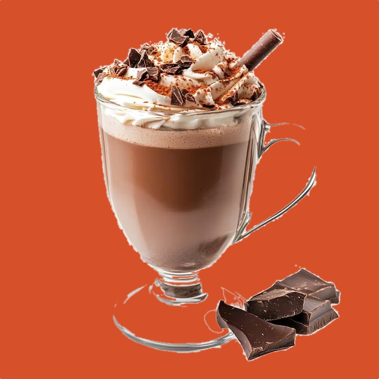
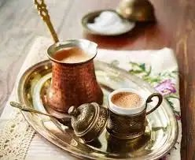
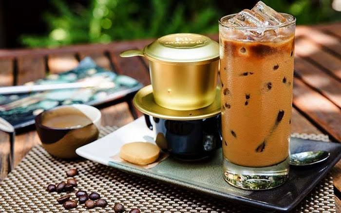
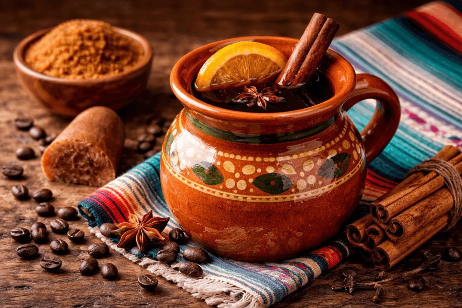
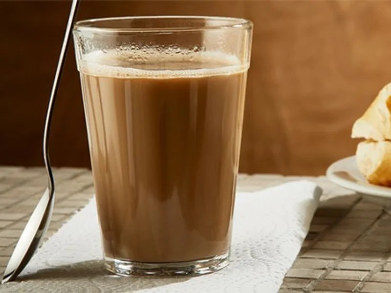
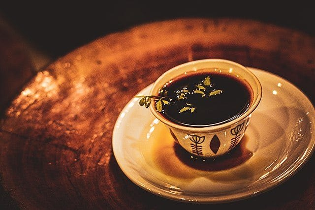
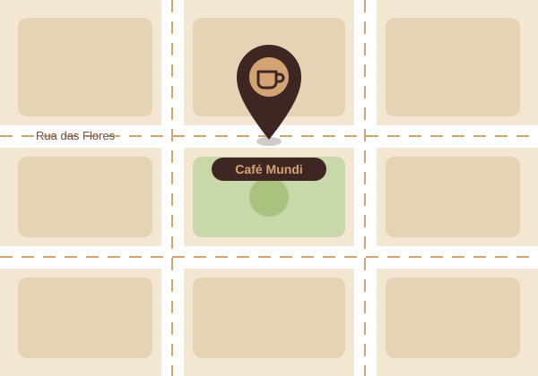

01

Uma cafeteria com cafés de vários países: do espresso italiano ao Jebena Buna etíope, cada xícara preparada do jeito tradicional de onde nasceu.
Origens
Cada grão carrega o clima, o solo e a história da sua região. Escolha pelo sabor que combina com o seu dia.
01

02

03

04

05

06

Cardápio
Café extraído sob alta pressão em dose curta. O cappuccino (espresso com leite e espuma) é consumido tradicionalmente apenas de manhã.
Café moído em pó finíssimo, fervido com água e açúcar em uma panela de cobre (cezve). Servido sem coar, com o pó no fundo da xícara.
Café forte coado em filtro individual de metal (phin), servido com leite condensado e gelo. Também existe a versão batida com gema de ovo e açúcar.
Café coado preparado em panela de barro com canela e piloncillo (rapadura de cana-de-açúcar não refinada).
Café coado forte em pano ou papel, consumido puro (frequentemente já adoçado) ou misturado com um pingo de leite.
Cerimônia tradicional onde os grãos verdes são torrados, moídos e fervidos na hora em um vaso de cerâmica de gargalo longo chamado jebena.
Cocktail quente composto por café encorpado, uísque irlandês, açúcar mascavo e uma camada espessa de creme de leite batido por cima.
Café solúvel batido energicamente com água gelada, açúcar e gelo até formar uma espuma densa e cremosa.
Serviços
Escolha três origens do cardápio e prove lado a lado, do espresso italiano ao café coado brasileiro, com as notas de sabor explicadas a cada xícara.
Ver o cardápio →Leve para casa os mesmos grãos das nossas origens (Brasil, Colômbia, Etiópia, Quênia, Indonésia e Costa Rica), moídos do jeito que combina com o seu preparo.
Conhecer as origens →Acompanhe o Jebena Buna na sua mesa: grãos verdes torrados, moídos e fervidos na hora, do jeito tradicional etíope.
Reservar uma mesa →Perguntas frequentes
Toque em uma pergunta para ver a resposta.
Reunimos grãos de diferentes regiões produtoras do mundo, como Brasil, Colômbia, Etiópia, Quênia, Indonésia e Costa Rica. Cada origem tem seu próprio perfil de sabor, que vai do achocolatado ao floral e cítrico.
O espresso é o café extraído sob alta pressão em dose curta. O cappuccino leva espresso, leite e espuma e, na Itália, costuma ser tomado só de manhã.
É um café moído em pó finíssimo, fervido com água e açúcar em uma panela de cobre chamada cezve. Ele é servido sem coar, por isso o pó fica no fundo da xícara.
Sim! O cà phê sữa đá, do Vietnã, é um café forte coado em filtro de metal (phin) e servido com leite condensado e gelo. O frappé grego também é gelado: café solúvel batido com água gelada e açúcar até formar uma espuma cremosa.
No Jebena Buna, os grãos verdes são torrados, moídos e fervidos na hora em um vaso de cerâmica de gargalo longo, chamado jebena. Você pode acompanhar tudo da sua mesa. Reserve com antecedência.
Venha para a mesa
Cada xícara conta a história de um país. Reserve com antecedência, conheça nossos cafés e deixe a gente escolher com você a origem que combina com o seu dia.
Venha nos visitar

Centro · União da Vitória – PR · CEP 84600-000